(i) Count the following rhythms.
(a)
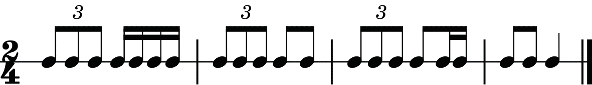
(b)
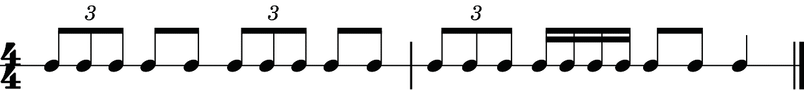
(c)
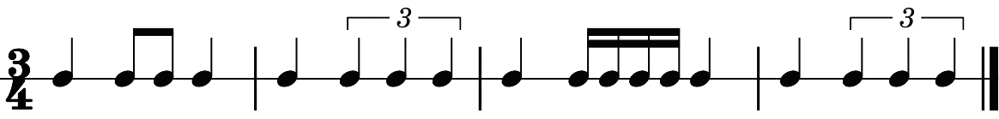
(d)
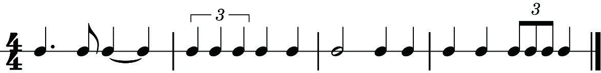
(ii) Clap while counting aloud the rhythm of the following melody.
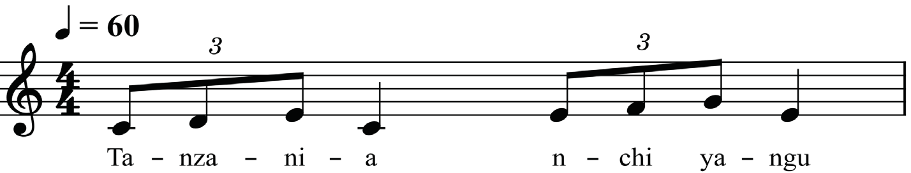
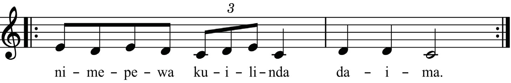
Application of rests in triplets
As in other common notes, rests can also be included in triplets. When a rest is applied in a triplet, it requires you to remain silent for a specific time, which is equivalent to the rest sign indicated. Figures 1.7 to 1.10 show examples of triplets with rests.

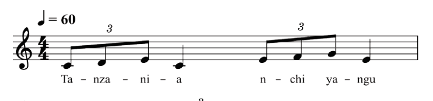
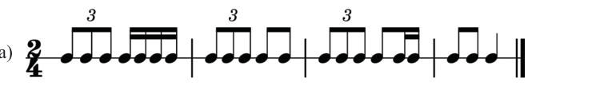
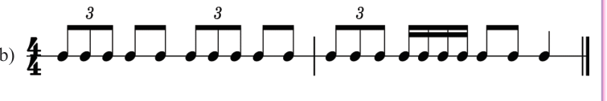
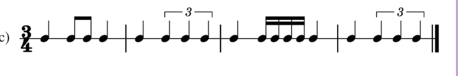
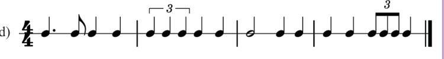
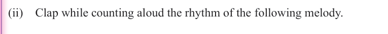
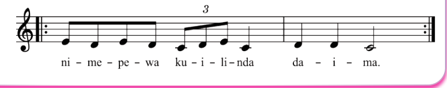